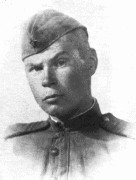
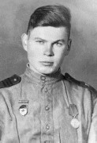
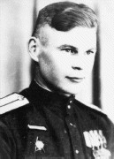

Юрий Семенович БЕЛАШ
1920 - 1988
О СЕБЕ
 Я никогда не думал, что могу писать стихи.
Три строки я еще мог, попотев, накропать, а вот зарифмовать четвертую - было свыше моих сил. Белые давались легче, но и они, в общем, являли жалкий вид. Провоевав три с половиной года на фронтах Отечественной войны, я поступил в Литературный институт имени А.М.Горького - с пьесой, затем перешел на критику, окончил аспирантуру - и занимался рецензированием и редакторской работой. Видать, штудируя чужие книги и рукописи, я и сам кой-чему научился,- во всяком случае, в конце 1967 года написал свое первое стихотворение - "Слезы". Не преувеличиваю: это было столь неожиданно, что я долго не мог уразуметь, как же сие произошло... С тех пор и пишу стихи. В основном - о войне: другие темы кажутся пресными.
Конечно, о войне написано так много, что подчас представляется, что написано уже все. Но это не так. И особенно это ясно тем, кто был в окопах. А я был. Был сержантом в стрелковом батальоне, в нескольких сотнях метров от врагов и в нескольких сантиметрах от смерти. От того-то и пишу главным образом о бойцах и сержантах переднего края - о том, что детально знаю по собственному опыту. Понятно, для литературной работы знание материала еще не все. Но при равных прочих условиях непосредственное знание жизненного материала, точное следование ему - на мой взгляд, основное, что надо поэту. Вот я и старался - предметно, в прямом изображении - передать чувства и мысли моих, в большинстве своем, давно погибших фронтовых товарищей, обстановку переднего края, собственные впечатления военных лет.
И когда я сейчас пытаюсь понять, а почему я так поздно стал писать стихи, то прихожу к мысли, что главная причина, пожалуй в том, что я, как ни странно, долго не мог постичь простую истину: поэзия должна быть познавательна не меньше, чем добротная проза. Но лучше поздно, чем никогда...
СЛОВО О ВОЙНЕ И ВОИНЕ.
Юрий БЕЛАШ
Это не было похоже на литературный труд, профессиональное стихотворчество. Это было какое-то мученичество - и освобождение. Почему-то вспоминается Гоголь. Наверное, потому, что и Белаш вот также умирал: ни от чего, просто - лег, распрощавшись со всеми: повернулся лицом к стенке и умер. Во сне.
Мальчик. Он перед смертью враз постарел. Война догнала. Судьба его удивительна и трагична. Она заслуживает прочтения - как и его стихи. Обычно мы говорим: "поэта - нет, стихи - живут". Иногда стоит менять порядок строк, чтобы знать какой ценой.
Ведь не случайно же последней, девятисотой, в окопных миниатюрах Юрий Белаш поставил эту:
И не надейтесь на книги:
Книги - лишь бледная тень
Перекипевших событий.
Большую часть пережитого
Люди уносят в могилу.
 "Солдатские строки" - небольшая часть
окопных миниатюр Белаша.
"Солдатские строки" - небольшая часть
окопных миниатюр Белаша.
* * *
Наступаем...
Каждый день - с утра, вторую неделю - наступаем.
Господи ты боже мой! - когда же кончатся
эти бездарные атаки на немецкие пулеметы
без артиллерийского обеспечения?..
Давно уже всем - от солдата до комбата - ясно,
что мы только зря кладем людей,-
но где-то там, в тылу, кто-то тупой и жестокий,
о котором ничего не знает даже комбат,
каждый вечер отдает один и тот же приказ:
- В России народу много. Утром взять высоту!..
* * *
Что мы знаем о животном начале в людях?..
Немного - поскольку ищем божественное в них.
Вот поэтому-то мы и путаемся в трех соснах,
пытаясь объяснить этого человека, в котором
божественного не больше, чем в спичечном коробке,
с помощью коего он раскочегаривал свою трубку.
* * *
Он стал богом. Предшественники - святыми.
Портреты - иконами. Лозунги - хоругвиями.
"Краткий курс" - священным писанием.
Коммунизм - царством небесным.
А грешников - в геенну огненную:
инквизиция, Торквемада!..
Ей-богу, в духовном училище и семинарии
все одиннадцать лет
он был круглым отличником.
{kind=link}
{kind=link}
{kind=link}